3 Regresión
Hasta ahora se ha visto como describir el comportamiento de una variable, pero en los fenómenos naturales normalmente aparecen más de una variable que suelen estar relacionadas. Por ejemplo, en un estudio sobre el peso de las personas, deberíamos incluir todas las variables con las que podría tener relación: altura, edad, sexo, dieta, tabaco, ejercicio físico, etc.
Para comprender el fenómeno no basta con estudiar cada variable por separado y es preciso un estudio conjunto de todas las variables para ver cómo interactúan y qué relaciones se dan entre ellas. El objetivo de la estadística en este caso es dar medidas del grado y del tipo de relación entre dichas variables.
Generalmente, en un estudio de dependencia se considera una variable dependiente \(Y\) que se supone relacionada con otras variables \(X_1,\ldots,X_n\) llamadas variables independientes.
El caso más simple es el de una sola variable independiente, y en tal caso se habla de estudio de dependencia simple. Para más de una variable independiente se habla de estudio de dependencia múltiple.
En este capítulo se verán los estudios de dependencia simple que son más sencillos.
3.1 Distribución de frecuencias conjunta
3.1.1 Frecuencias conjuntas
Al estudiar la dependencia simple entre dos variables \(X\) e \(Y\), no se pueden estudiar sus distribuciones por separado, sino que hay que estudiar la distribución conjunta de la variable bidimensional \((X,Y)\), cuyos valores son los pares \((x_i,y_j)\) donde el primer elemento es un valor \(X\) y el segundo uno de \(Y\).
Definición 3.1 (Frecuencias muestrales conjuntas) Dada una muestra de tamaño \(n\) de una variable bidimensional \((X,Y)\), para cada valor de la variable \((x_i,y_j)\) observado en la muestra se define
- Frecuencia absoluta \(n_{ij}\): Es el número de veces que el par \((x_i,y_j)\) aparece en la muestra.
- Frecuencia relativa \(f_{ij}\): Es la proporción de veces que el par \((x_i,y_j)\) aparece en la muestra.
\[f_{ij}=\frac{n_{ij}}{n}\]
Para las variables bidimensionales no tienen sentido las frecuencias acumuladas.
3.1.2 Distribución de frecuencias bidimensional
Al conjunto de valores de la variable bidimensional y sus respectivas frecuencias muestrales se le denomina distribución de frecuencias bidimensional, y se representa mediante una tabla de frecuencias bidimensional.
\[\begin{array}{|c|ccccc|} \hline X\backslash Y & y_1 & \cdots & y_j & \cdots & y_q\\ \hline x_1 & n_{11} & \cdots & n_{1j} & \cdots & n_{1q}\\ \vdots & \vdots & \vdots & \vdots & \vdots & \vdots\\ x_i & n_{i1} & \cdots & n_{ij} & \cdots & n_{iq}\\ \vdots & \vdots & \vdots & \vdots & \vdots & \vdots\\ x_p & n_{p1} & \cdots & n_{pj} & \cdots & n_{pq}\\ \hline \end{array}\]
Ejemplo 3.1 La estatura (en cm) y el peso (en Kg) de una muestra de 30 estudiantes es:
(179,85), (173,65), (181,71), (170,65), (158,51), (174,66),
(172,62), (166,60), (194,90), (185,75), (162,55), (187,78),
(198,109), (177,61), (178,70), (165,58), (154,50), (183,93),
(166,51), (171,65), (175,70), (182,60), (167,59), (169,62),
(172,70), (186,71), (172,54), (176,68),(168,67), (187,80).
La tabla de frecuencias bidimensional es
\[\begin{array}{|c||c|c|c|c|c|c|} \hline X/Y & [50,60) & [60,70) & [70,80) & [80,90) & [90,100) & [100,110) \\ \hline\hline (150,160] & 2 & 0 & 0 & 0 & 0 & 0 \\ \hline (160,170] & 4 & 4 & 0 & 0 & 0 & 0 \\ \hline (170,180] & 1 & 6 & 3 & 1 & 0 & 0 \\ \hline (180,190] & 0 & 1 & 4 & 1 & 1 & 0 \\ \hline (190,200] & 0 & 0 & 0 & 0 & 1 & 1 \\ \hline \end{array}\]
3.1.3 Diagrama de dispersión
La distribución de frecuencias conjunta de una variable bidimensional puede representarse gráficamente mediante un diagrama de dispersión, donde los datos se representan como una colección de puntos en un plano cartesiano.
Habitualmente la variable independiente se representa en el eje \(X\) y la variable dependiente en el eje \(Y\). Por cada par de valores \((x_i,y_j)\) en la muestra se dibuja un punto en el plano con esas coordenadas.
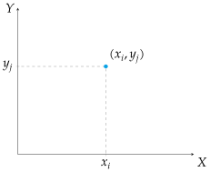
El resultado es un conjunto de puntos que se conoce como nube de puntos.
Ejemplo 3.2 El siguiente diagrama de dispersión representa la distribución conjunta de estaturas y pesos de la muestra anterior.
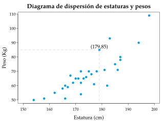
El diagrama de dispersión da información visual sobre el tipo de relación entre las variables.
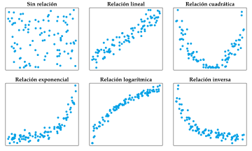
3.1.4 Distribuciones marginales
A cada una de las distribuciones de las variables que conforman la variable bidimensional se les llama .
Las distribuciones marginales se pueden obtener a partir de la tabla de frecuencias bidimensional, sumando las frecuencias por filas y columnas.
\[ \begin{array}{|c|ccccc|c|} \hline X\backslash Y & y_1 & \cdots & y_j & \cdots & y_q & \color{red}{n_x}\\ \hline x_1 & n_{11} & \cdots & n_{1j} & \cdots & n_{1q} & \color{red}{n_{x_1}}\\ \vdots & \vdots & \vdots & \downarrow + & \vdots & \vdots & \color{red}{\vdots} \\ x_i & n_{i1} & \stackrel{+}{\rightarrow} & n_{ij} & \stackrel{+}{\rightarrow} & n_{iq} & \color{red}{n_{x_i}}\\ \vdots & \vdots & \vdots & \downarrow + & \vdots & \vdots & \color{red}{\vdots}\\ x_p & n_{p1} & \cdots & n_{pj} & \cdots & n_{pq} & \color{red}{n_{x_p}} \\ \hline \color{red}{n_y} & \color{red}{n_{y_1}} & \color{red}{\cdots} & \color{red}{n_{y_j}} & \color{red}{\cdots} & \color{red}{n_{y_q}} & n\\ \hline \end{array} \]
Ejemplo 3.3 En el ejemplo anterior de las estaturas y los pesos, las distribuciones marginales son
\[ \begin{array}{|c||c|c|c|c|c|c|c|} \hline X/Y & [50,60) & [60,70) & [70,80) & [80,90) & [90,100) & [100,110) & \color{red}{n_x}\\ \hline\hline (150,160] & 2 & 0 & 0 & 0 & 0 & 0 & \color{red}{2}\\ \hline (160,170] & 4 & 4 & 0 & 0 & 0 & 0 & \color{red}{8}\\ \hline (170,180] & 1 & 6 & 3 & 1 & 0 & 0 & \color{red}{11} \\ \hline (180,190] & 0 & 1 & 4 & 1 & 1 & 0 & \color{red}{7} \\ \hline (190,200] & 0 & 0 & 0 & 0 & 1 & 1 & \color{red}{2}\\ \hline \color{red}{n_y} & \color{red}{7} & \color{red}{11} & \color{red}{7} & \color{red}{2} & \color{red}{2} & \color{red}{1} & 30\\ \hline \end{array} \]
y los estadísticos correspondientes son
\[ \begin{array}{lllll} \bar x = 174.67 \mbox{ cm} & \quad & s^2_x = 102.06 \mbox{ cm}^2 & \quad & s_x = 10.1 \mbox{ cm}\\ \bar y = 69.67 \mbox{ Kg} & & s^2_y = 164.42 \mbox{ Kg}^2 & & s_y = 12.82 \mbox{ Kg} \end{array} \]
3.2 Covarianza
Para analizar la relación entre dos variables cuantitativas es importante hacer un estudio conjunto de las desviaciones respecto de la media de cada variable.
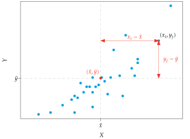
Si dividimos la nube de puntos del diagrama de dispersión en 4 cuadrantes centrados en el punto de medias \((\bar x, \bar y)\), el signo de las desviaciones será:
| Cuadrante | \((x_i-\bar x)\) | \((y_j-\bar y)\) | \((x_i-\bar x)(y_j-\bar y)\) |
|---|---|---|---|
| 1 | \(+\) | \(+\) | \(+\) |
| 2 | \(-\) | \(+\) | \(-\) |
| 3 | \(-\) | \(-\) | \(+\) |
| 4 | \(+\) | \(-\) | \(-\) |
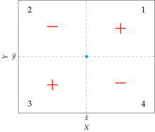
Si la relación entre las variables es lineal y creciente, entonces la mayor parte de los puntos estarán en los cuadrantes 1 y 3 y la suma de los productos de desviaciones será positiva.
\[\sum(x_i-\bar x)(y_j-\bar y) > 0\]
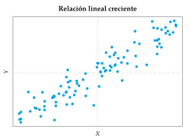
Si la relación entre las variables es lineal y decreciente, entonces la mayor parte de los puntos estarán en los cuadrantes 2 y 4 y la suma de los productos de desviaciones será negativa.
\[\sum(x_i-\bar x)(y_j-\bar y) = -\]
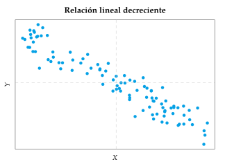
Usando el producto de las desviaciones respecto de las medias surge el siguiente estadístico.
Definición 3.2 (Covarianza muestral) La covarianza muestral de una variable aleatoria bidimensional \((X,Y)\) se define como el promedio de los productos de las respectivas desviaciones respecto de las medias de \(X\) e \(Y\).
\[s_{xy}=\frac{\sum (x_i-\bar x)(y_j-\bar y)n_{ij}}{n}\]
También puede calcularse de manera más sencilla mediante la fórmula
\[s_{xy}=\frac{\sum x_iy_jn_{ij}}{n}-\bar x\bar y.\]
La covarianza sirve para estudiar la relación lineal entre dos variables:
- Si \(s_{xy}>0\) existe una relación lineal creciente.
- Si \(s_{xy}<0\) existe una relación lineal decreciente.
- Si \(s_{xy}=0\) no existe relación lineal.
Ejemplo 3.4 Utilizando la tabla de frecuencias bidimensional de la muestra de estaturas y pesos
\[ \begin{array}{|c||c|c|c|c|c|c|c|} \hline X/Y & [50,60) & [60,70) & [70,80) & [80,90) & [90,100) & [100,110) & n_x\\ \hline\hline (150,160] & 2 & 0 & 0 & 0 & 0 & 0 & 2\\ \hline (160,170] & 4 & 4 & 0 & 0 & 0 & 0 & 8\\ \hline (170,180] & 1 & 6 & 3 & 1 & 0 & 0 & 11 \\ \hline (180,190] & 0 & 1 & 4 & 1 & 1 & 0 & 7 \\ \hline (190,200] & 0 & 0 & 0 & 0 & 1 & 1 & 2\\ \hline n_y & 7 & 11 & 7 & 2 & 2 & 1 & 30\\ \hline \end{array} \]
\[\bar x = 174.67 \mbox{ cm} \qquad \bar y = 69.67 \mbox{ Kg}\]
la covarianza vale
\[\begin{align*} s_{xy} &=\frac{\sum x_iy_jn_{ij}}{n}-\bar x\bar y = \frac{155\cdot 55\cdot 2 + 165\cdot 55\cdot 4 + \cdots + 195\cdot 105\cdot 1}{30}-174.67\cdot 69.67 =\\ & = \frac{368200}{30}-12169.26 = 104.07 \mbox{ cm$\cdot$ Kg}. \end{align*}\]
Esto indica que existe una relación lineal creciente entre la estatura y el peso.
3.3 Regresión
En muchos casos el objetivo de un estudio no es solo detectar una relación entre dos variables, sino explicarla mediante alguna función matemática \[y=f(x)\] que permita predecir la variable dependiente para cada valor de la independiente.
La regresión es la parte de la Estadística encargada de construir esta función, que se conoce como función de regresión o modelo de regresión.
3.3.1 Modelos de regresión simple
Dependiendo de la forma de función de regresión, existen muchos tipos de regresión simple. Los más habituales son los que aparecen en la siguiente tabla:
| Modelo | Ecuación |
|---|---|
| Lineal | \(y=a+bx\) |
| Cuadrático | \(y=a+bx+cx^2\) |
| Cúbico | \(y=a+bx+cx^2+dx^3\) |
| Potencial | \(y=a\cdot x^b\) |
| Exponencial | \(y=e^{a+bx}\) |
| Logarítmico | \(y=a+b\log x\) |
| Inverso | \(y=a+\frac{b}{x}\) |
| Sigmoidal | \(y=e^{a+\frac{b}{x}}\) |
La elección de un tipo u otro depende de la forma que tenga la nube de puntos del diagrama de dispersión.
3.3.2 Residuos o errores predictivos
Una vez elegida la familia de curvas que mejor se adapta a la nube de puntos, se determina, dentro de dicha familia, la curva que mejor se ajusta a la distribución, es decir, la función que mejor predice la variable dependiente.
El objetivo es encontrar la función de regresión que haga mínimas las distancias entre los valores de la variable dependiente observados en la muestra, y los predichos por la función de regresión. Estas distancias se conocen como residuos o errores predictivos.
Definición 3.3 (Residuos o errores predictivos) Dado el modelo de regresión \(y=f(x)\) para una variable bidimensional \((X,Y)\), el residuo o error predictivo de un valor \((x_i,y_j)\) observado en la muestra, es la diferencia entre el valor observado de la variable dependiente \(y_j\) y el predicho por la función de regresión para \(x_i\),
\[e_{ij} = y_j-f(x_i).\]
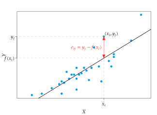
3.3.3 Ajuste de mínimos cuadrados
Una forma posible de obtener la función de regresión es mediante el método de mínimos cuadrados que consiste en calcular la función que haga mínima la suma de los cuadrados de los residuos
\[\sum e_{ij}^2.\]
En el caso de un modelo de regresión lineal \(f(x) = a + bx\), como la recta depende de dos parámetros (el término independiente \(a\) y la pendiente \(b\)), la suma también dependerá de estos parámetros
\[\theta(a,b) = \sum e_{ij}^2 =\sum (y_j - f(x_i))^2 =\sum (y_j-a-bx_i)^2.\]
Así pues, todo se reduce a buscar los valores \(a\) y \(b\) que hacen mínima esta suma.
Considerando la suma de los cuadrados de los residuos como una función de dos variables \(\theta(a,b)\), se pueden calcular los valores de los parámetros del modelo que hacen mínima esta suma derivando e igualando a 0 las derivadas con respecto a \(a\) y \(b\).
\[\begin{align*} \frac{\partial \theta(a,b)}{\partial a} &= \frac{\partial \sum (y_j-a-bx_i)^2 }{\partial a} =0\\ \frac{\partial \theta(a,b)}{\partial b} &= \frac{\partial \sum (y_j-a-bx_i)^2 }{\partial b} =0 \end{align*}\]
Tras resolver el sistema se obtienen los valores
\[ a= \bar y - \frac{s_{xy}}{s_x^2}\bar x \qquad b=\frac{s_{xy}}{s_x^2} \]
Estos valores hacen mínimos los residuos en \(Y\) y por tanto dan la recta de regresión óptima.
3.3.4 Coeficiente de determinación
A partir de la varianza residual se puede definir otro estadístico más sencillo de interpretar.
Definición 3.4 (Coeficiente de determinación muestral \(r^2\)) Dado un modelo de regresión simple \(y=f(x)\) de una variable bidimensional \((X,Y)\), su coeficiente de determinación muestral es
\[r^2 = 1- \frac{s_{ry}^2}{s_y^2}\]
Como la varianza residual puede tomar valores entre 0 y \(s_y^2\), se tiene que
\[0\leq r^2\leq 1\]
Cuanto mayor sea \(r^2\), mejor explicará el modelo de regresión la relación entre las variables, en particular:
- Si \(r^2 =0\) entonces no existe relación del tipo planteado por el modelo.
- Si \(r^2=1\) entonces la relación que plantea el modelo es perfecta.
En el caso de las rectas de regresión, el coeficiente de determinación puede calcularse con esta fórmula
\[ r^2 = \frac{s_{xy}^2}{s_x^2s_y^2}.\]
Prueba. Cuando el modelo ajustado es la recta de regresión la varianza residual vale
\[\begin{align*} s_{ry}^2 & = \sum e_{ij}^2f_{ij} = \sum (y_j - f(x_i))^2f_{ij} = \sum \left(y_j - \bar y -\frac{s_{xy}}{s_x^2}(x_i-\bar x) \right)^2f_{ij}=\\ & = \sum \left((y_j - \bar y)^2 +\frac{s_{xy}^2}{s_x^4}(x_i-\bar x)^2 - 2\frac{s_{xy}}{s_x^2}(x_i-\bar x)(y_j -\bar y)\right)f_{ij} =\\ & = \sum (y_j - \bar y)^2f_{ij} +\frac{s_{xy}^2}{s_x^4}\sum (x_i-\bar x)^2f_{ij}- 2\frac{s_{xy}}{s_x^2}\sum (x_i-\bar x)(y_j -\bar y)f_{ij}=\\ & = s_y^2 + \frac{s_{xy}^2}{s_x^4}s_x^2 - 2 \frac{s_{xy}}{s_x^2}s_{xy} = s_y^2 - \frac{s_{xy}^2}{s_x^2}. \end{align*}\]
y, por tanto, el coeficiente de determinación lineal vale
\[\begin{align*} r^2 &= 1- \frac{s_{ry}^2}{s_y^2} = 1- \frac{s_y^2 - \frac{s_{xy}^2}{s_x^2}}{s_y^2} = 1 - 1 + \frac{s_{xy}^2}{s_x^2s_y^2} = \frac{s_{xy}^2}{s_x^2s_y^2}. \end{align*}\]
Ejemplo 3.5 En el ejemplo de las estaturas y pesos se tenía
\[ \begin{array}{lll} \bar x = 174.67 \mbox{ cm} & \quad & s^2_x = 102.06 \mbox{ cm}^2\\ \bar y = 69.67 \mbox{ Kg} & & s^2_y = 164.42 \mbox{ Kg}^2\\ s_{xy} = 104.07 \mbox{ cm$\cdot$ Kg} \end{array} \]
De modo que el coeficiente de determinación lineal vale
\[ r^2 = \frac{s_{xy}^2}{s_x^2s_y^2} = \frac{(104.07 \mbox{ cm$ \cdot$ Kg})^2}{102.06 \mbox{ cm}^2 \cdot 164.42 \mbox{ Kg}^2} = 0.65. \]
Esto indica que la recta de regresión del peso sobre la estatura explica el 65% de la variabilidad del peso, y de igual modo, la recta de regresión de la estatura sobre el peso explica el 65% de la variabilidad de la estatura.
3.3.5 Coeficiente de correlación lineal
Definición 3.5 (Coeficiente de correlación lineal muestral) Dada una variable bidimensional \((X,Y)\), el coeficiente de correlación lineal muestral es la raíz cuadrada de su coeficiente de determinación lineal, con signo el de la covarianza
\[ r = \sqrt{r^2} = \dfrac{s_{xy}}{s_xs_y}. \]
Como \(r^2\) toma valores entre 0 y 1, \(r\) tomará valores entre -1 y 1,
\[-1\leq r\leq 1\]
El coeficiente de correlación lineal no sólo mide mide el grado de dependencia lineal sino también su dirección (creciente o decreciente):
- Si \(r =0\) entonces no existe relación lineal.
- Si \(r=1\) entonces existe una relación lineal creciente perfecta.
- Si \(r=-1\) entonces existe una relación lineal decreciente perfecta.
:::{#exm-coeficiente-correlacion} En el ejemplo de las estaturas y los pesos se tenía
\[ \begin{array}{lll} \bar x = 174.67 \mbox{ cm} & \quad & s^2_x = 102.06 \mbox{ cm}^2\\ \bar y = 69.67 \mbox{ Kg} & & s^2_y = 164.42 \mbox{ Kg}^2\\ s_{xy} = 104.07 \mbox{ cm$\cdot$ Kg} \end{array} \]
De manera que el coeficiente de correlación lineal es
\[ r = \frac{s_{xy}}{s_xs_y} = \frac{104.07 \mbox{ cm $\cdot$ Kg}}{10.1 \mbox{ cm} \cdot 12.82 \mbox{ Kg}} = +0.8. \]
Esto indica que la relación lineal entre el peso y la estatura es fuerte, y además creciente.
3.3.6 Distintos grados de correlación
Los siguientes diagramas de dispersión muestran modelos de regresión lineales con diferentes grados de correlación.
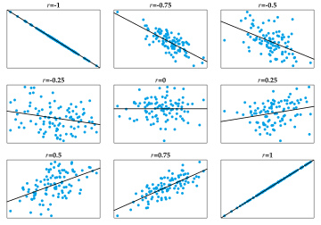
3.3.7 Fiabilidad de las predicciones de un modelo de regresión
Aunque el coeficiente de determinación o el de correlación determinan la bondad de ajuste de un modelo de regresión, existen otros factores que influyen en la fiabilidad de las predicciones de un modelo de regresión:
- El coeficiente de determinación: Cuanto mayor sea, menores serán los errores predictivos y mayor la fiabilidad de las predicciones.
- La variabilidad de la población: Cuanto más variable es una población, más difícil es predecir y por tanto menos fiables serán las predicciones.
- El tamaño muestral: Cuanto mayor sea, más información tendremos y, en consecuencia, más fiables serán las predicciones.
Además, hay que tener en cuenta que un modelo de regresión es válido únicamente para el rango de valores observados en la muestra. Fuera de ese rango no hay información del tipo de relación entre las variables, por lo que no deben hacerse predicciones para valores lejos de los observados en la muestra.
3.4 Regresión no lineal
El ajuste de un modelo de regresión no lineal es similar al del modelo lineal y también puede realizarse mediante la técnica de mínimos cuadrados.
No obstante, en determinados casos un ajuste no lineal puede convertirse en un ajuste lineal mediante una sencilla transformación de alguna de las variables del modelo.
3.4.1 Transformación de modelos de regresión no lineales
Logarítmico: Un modelo logarítmico \(y = a+b \log x\) se convierte en un modelo lineal haciendo el cambio \(t=\log x\):
\[y=a+b\log x = a+bt.\]
Exponencial: Un modelo exponencial \(y = ae^{bx}\) se convierte en un modelo lineal haciendo el cambio \(z = \log y\):
\[z = \log y = \log(ae^{bx}) = \log a + \log e^{bx} = a^\prime +bx.\]
Potencial: Un modelo potencial \(y = ax^b\) se convierte en un modelo lineal haciendo los cambios \(t=\log x\) y \(z=\log y\):
\[z = \log y = \log(ax^b) = \log a + b \log x = a^\prime+bt.\]
Inverso: Un modelo inverso \(y = a+b/x\) se convierte en un modelo lineal haciendo el cambio \(t=1/x\):
\[y = a + b(1/x) = a+bt.\]
Sigmoidal: Un modelo curva S \(y = e^{a+b/x}\) se convierte en un modelo lineal haciendo los cambios \(t=1/x\) y \(z=\log y\):
\[z = \log y = \log (e^{a+b/x}) = a+b(1/x) = a+bt.\]
3.4.2 Relación exponencial
:::{#exm-regresion-exponencial} El número de bacterias de un cultivo evoluciona con el tiempo según la siguiente tabla:
\[\begin{array}{c|c} \mbox{Horas} & \mbox{Bacterias}\\ \hline 0 & 25 \\ 1 & 28 \\ 2 & 47\\ 3 & 65 \\ 4 & 86\\ 5 & 121\\ 6 & 190\\ 7 & 290\\ 8 & 362 \end{array} \]
El diagrama de dispersión asociado es
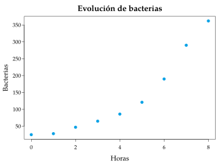
Si realizamos un ajuste lineal, obtenemos la siguiente recta de regresión
\[\mbox{Bacterias} = -30.18+41,27\,\mbox{Horas, with } r^2=0.85.\]
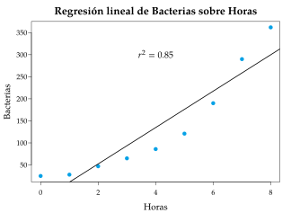
¿Es un buen modelo?
Aunque el modelo lineal no es malo, de acuerdo al diagrama de dispersión es más lógico construir un modelo exponencial o cuadrático.
Para construir el modelo exponencial \(y = ae^{bx}\) hay que realizar la transformación \(z=\log y\), es decir, aplicar el logaritmo a la variable dependiente.
\[\begin{array}{c|c|c} \mbox{Horas} & \mbox{Bacterias} & \mbox{$\log$(Bacterias)}\\ \hline 0 & 25 & 3.22\\ 1 & 28 & 3.33\\ 2 & 47 & 3.85\\ 3 & 65 & 4.17\\ 4 & 86 & 4.45\\ 5 & 121 & 4.80\\ 6 & 190 & 5.25\\ 7 & 290 & 5.67\\ 8 & 362 & 5.89 \end{array} \]
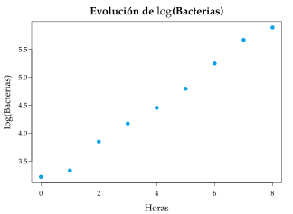
Ahora sólo queda calcular la recta de regresión del logaritmo de Bacterias sobre Horas
\[\mbox{Log Bacterias} = 3.107 + 0.352\, \mbox{Horas}.\]
Y, deshaciendo el cambio de variable, se obtiene el modelo exponencial
\[\mbox{Bacterias} = e^{3.107+0.352\,\mbox{Horas}}, \mbox{ con } r^2=0.99.\]
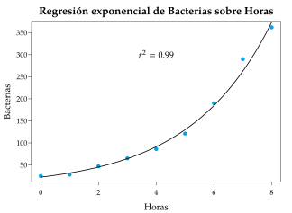
Como se puede apreciar, el modelo exponencial se ajusta mucho mejor que el modelo lineal.
3.5 Riesgos de la regresión
3.5.1 La falta de ajuste no significa independencia
Es importante señalar que cada modelo de regresión tiene su propio coeficiente de determinación.
Así, un coeficiente de determinación cercano a cero significa que no existe relación entre las variables del tipo planteado por el modelo, pero eso no quiere decir que las variables sean independientes, ya que puede existir relación de otro tipo.
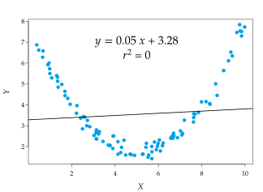
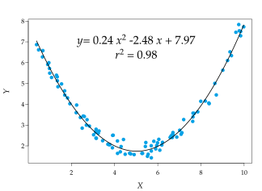
3.5.2 Datos atípicos en regresión
Los datos atípicos en un estudio de regresión son los puntos que claramente no siguen la tendencia del resto de los puntos en el diagrama de dispersión, incluso si los valores del par no se pueden considerar atípicos para cada variable por separado.
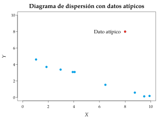
Los datos atípicos en regresión suelen provocar cambios drásticos en el ajuste de los modelos de regresión, y por tanto, habrá que tener mucho cuidado con ellos.
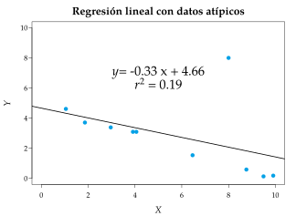
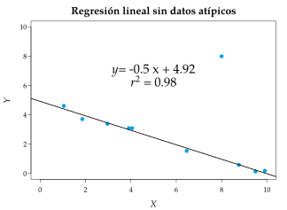
3.5.3 La paradoja de Simpson
A veces, una tendencia desaparece o incluso se revierte cuando se divide la muestra en grupos de acuerdo a una variable cualitativa que está relacionada con la variable dependiente. Esto se conoce como la paradoja de Simpson.
:::{#exm-paradoja-simpson} El siguiente diagrama de dispersión muestra una relación inversa entre entre las horas de estudio preparando un examen y la nota del examen.
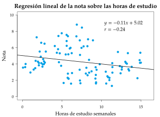
Pero si se divide la muestra en dos grupos (buenos y malos estudiantes) se obtienen diferentes tendencias y ahora la relación es directa, lo que tiene más lógica.
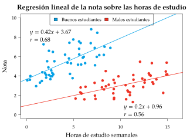